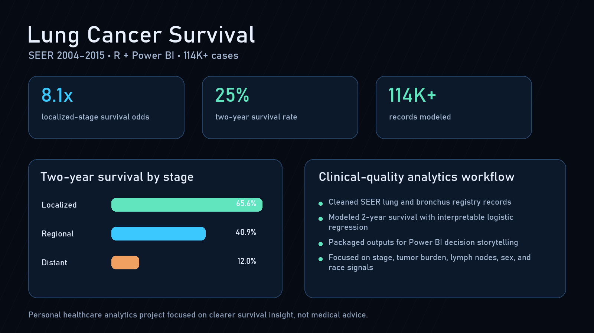

Lung Cancer Survival (SEER 2004-2015) (R + Power BI)

Overview
Analyzed 114K SEER lung cancer cases (2004-2015) to identify the strongest predictors of 2-year survival. Built a full R workflow with data cleaning, statistical tests, and logistic regression, then visualized results in Power BI. Found stage at diagnosis increases survival odds by 8x, with tumor size, lymph node spread, sex, and race as secondary predictors. Clear, clinical-quality survival analysis with interpretable insights.
What I Did
- Defined the business objective, metric targets, and analysis scope.
- Built and validated the data, modeling, and reporting workflow.
- Packaged outputs for stakeholder interpretation and decision support.
Results/Impact
Delivered an analysis workflow with decision-ready outputs and reusable artifacts.
Tech Stack
- Data Analysis, Problem Solving, Programming, Project Management
Deliverables
Project Notes
Description: Analyzed 114K SEER lung cancer cases (2004-2015) to identify the strongest predictors of 2-year survival. Built a full R workflow with data cleaning, statistical tests, and logistic regression, then visualized results in Power BI. Found stage at diagnosis increases survival odds by 8x, with tumor size, lymph node spread, sex, and race as secondary predictors. Clear, clinical-quality survival analysis with interpretable insights. Skills Demonstrated: Data Analysis, Problem Solving, Programming, Project Management Project Status: Completed Completion Date: October 7, 2025
Executive Summary
This project came from something personal. After losing my dad to cancer, I-ve wanted to understand what shapes survival and what doesn-t. I chose to focus on lung cancer because it-s one of the hardest and most common forms to survive.
I used data from the SEER cancer registry (2004-2015) and built a full analysis in R and Power BI. My goal was to find what really predicts survival in the data, not just what people assume.
Here-s what stood out:
- The stage of diagnosis changes everything. Patients caught early were eight times more likely to survive two years.
- Tumor size and the number of affected lymph nodes both reduced survival odds.
- Men had slightly lower odds of survival than women.
- People identified as Asian, Pacific Islander, or American Indian tended to do better than White patients, but those gaps were smaller than I expected.
Across the dataset, there were over 114,000 cases, and about 25% of patients survived two years.
Working on this reminded me that behind every line of data is a person and a story. It made the statistics feel real.
Data & Tools
- Dataset: SEER 2004-2015 (Lung & Bronchus cancer)
- Cases: 114,000 total
- Main metric: 2-year survival
- Tools used: R (R Markdown) and Power BI
- Exports: Cleaned data and model outputs for visualization
Methods
I started by filtering the SEER dataset to keep only lung and bronchus cancers diagnosed from 2004 to 2015. I kept the first primary cancers only, since many patients had multiple diagnoses.
Then I converted survival months into numbers and created binary outcomes:
- Survived at least 2 years
- Survived at least 5 years (for reference)
After cleaning, I ran several tests to explore the data:
- Chi-square tests for categorical variables like stage, sex, and race
- t-tests and ANOVA for tumor size
- A logistic regression model to see which factors best predicted survival
Here-s what the analysis showed:
| Test | Result |
|---|---|
| Stage vs survival | χ = 24,261, p < 0.001 |
| Sex vs survival | χ = 847, p < 0.001 |
| Race vs survival | χ = 169, p < 0.001 |
Average tumor size was 61 mm in those who didn-t survive two years and 58 mm in those who did. The difference seems small but was still statistically significant (p = 0.014).
The logistic regression made the relationships clearer:
| Predictor | Odds Ratio | 95% CI | p-value |
|---|---|---|---|
| Localized stage | 8.13 | (7.76, 8.52) | < 0.001 |
| Regional stage | 3.20 | (3.07, 3.34) | < 0.001 |
| Male | 0.64 | (0.62, 0.67) | < 0.001 |
| Race: Other (AI/AN, A/PI) | 1.52 | (1.40, 1.64) | < 0.001 |
| Tumor size | 1.00 (per mm) | < 0.001 | |
| Positive nodes | 0.98 (per node) | < 0.001 |
The results were clear. The earlier the cancer is caught, the better the chance of survival.
R Analysis
I used R to handle all the cleaning, statistics, and modeling before moving anything to Power BI.
The first step was to take the raw SEER export and make sense of it. That meant renaming the long variable names, filtering to lung and bronchus cancers, and converting survival months into actual numbers.
After cleaning, I defined two survival outcomes:
- Two-year survival (main metric)
- Five-year survival (for comparison)
Then I ran several basic tests to see what mattered most.
- Chi-square tests showed clear differences by stage, sex, and race.
- t-tests and ANOVA helped check tumor size across groups.
- Finally, a logistic regression model tied everything together by predicting who survived two years based on stage, tumor size, lymph nodes, sex, and race.
Each test confirmed what doctors often see in practice.
Stage at diagnosis was the biggest factor, followed by tumor size and how far the cancer had spread through lymph nodes.
Once the analysis was complete, I exported the cleaned data and model results as CSVs for visualization in Power BI.
R Code Samples
R Code for Lung Cancer Survival Analysis
Data Cleaning & Setup
``` r # Load libraries library(tidyverse) library(broom) library(knitr) library(kableExtra)
# Import SEER dataset seer_raw <- read.csv(“cancer_data.csv”)
# Rename key columns for easier reference seer <- seer_raw %>% rename( age_grp =
Age.recode.with..1.year.olds.and.90., sex =Sex, race =Race.recode..White..Black..Other., site_code =Primary.Site, stage_sum =Summary.stage.2000..1998.2017., dx_year =Year.of.diagnosis, surv_months =Survival.months, tumor_size =CS.tumor.size..2004.2015., nodes_pos =Regional.nodes.positive..1988..) %>% filter(site_code >= 340 & site_code <= 349, dx_year >= 2004 & dx_year <= 2015, seq_num == “One primary only”) ```Survival Outcome Creation
r # Convert survival months and create 2- & 5-year outcomes seer <- seer %>% mutate( surv_months = as.numeric(surv_months), survived_24m = ifelse(surv_months >= 24, 1, 0), survived_5yr = ifelse(surv_months >= 60, 1, 0) )Statistical Tests
``` r # Chi-square tests chisq.test(table(seer\(stage_sum, seer\)survived_24m)) chisq.test(table(seer\(sex, seer\)survived_24m)) chisq.test(table(seer\(race, seer\)survived_24m))
# t-test & ANOVA seer\(tumor_size <- as.numeric(seer\)tumor_size) t.test(tumor_size ~ survived_24m, data = seer) aov(tumor_size ~ stage_sum, data = seer) %>% summary() ```
Logistic Regression Model
``` r # Logistic regression for 2-year survival glm_fit <- glm( survived_24m ~ stage_sum + sex + race + tumor_size + nodes_pos, data = seer, family = binomial() )
# View odds ratios glm_results <- tidy(glm_fit, exponentiate = TRUE, conf.int = TRUE) glm_results %>% select(term, estimate, conf.low, conf.high, p.value) %>% rename( Predictor = term,
Odds Ratio= estimate,Lower 95% CI= conf.low,Upper 95% CI= conf.high,p-value= p.value ) ```Export for Power BI
``` r # Export cleaned data and model results write.csv(seer, “seer_lung_clean.csv”, row.names = FALSE)
glm_results %>% select(term, estimate, conf.low, conf.high, p.value) %>% rename( Predictor = term, Odds_Ratio = estimate, Lower_95_CI = conf.low, Upper_95_CI = conf.high, P_value = p.value ) %>% write.csv(“logistic_regression_results.csv”, row.names = FALSE) ```
[Cancer-Project.pdf](Lung%20Cancer%20Survival%20(SEER%202004%E2%80%932015)%20(R%20%C2%B7%20Power%20B/Cancer-Project.pdf)
Power BI Dashboard
Once I had the cleaned data, I built a two-page dashboard in Power BI to make the patterns easier to see.
Page 1 - Overview
- 2-year survival by stage, sex, and race
- Average tumor size and survival rates
- Filters for year, stage, sex, and race
[cancerbi.pdf](Lung%20Cancer%20Survival%20(SEER%202004%E2%80%932015)%20(R%20%C2%B7%20Power%20B/cancerbi.pdf)
Key Insights
- Stage decides everything. Localized cancers survive at a much higher rate than distant ones.
- Tumor size and node spread matter. Larger tumors and higher node counts lower survival odds.
- Gender plays a small role. Men have lower odds of survival, even after adjusting for other factors.
- Race differences exist but are modest. Clinical factors dominate.
- Early detection saves lives. The data makes it impossible to ignore.
Reflection
This project was different from the others I-ve done. It wasn-t about building models or dashboards for their own sake. It was about trying to understand something that has personally affected my life.
Looking through this data, I couldn-t help but think about my dad and about how much difference early screening could have made. These records may look like numbers, but they carry real stories and pain behind them.
This is what drives me to keep working in data and healthcare. The analytics matter because they can help real people.
Downloads
[logistic_regression_results.csv](Lung%20Cancer%20Survival%20(SEER%202004%E2%80%932015)%20(R%20%C2%B7%20Power%20B/logistic_regression_results.csv)
[cancerbi.pbix](Lung%20Cancer%20Survival%20(SEER%202004%E2%80%932015)%20(R%20%C2%B7%20Power%20B/cancerbi.pbix)
[Cancer-Project.pdf](Lung%20Cancer%20Survival%20(SEER%202004%E2%80%932015)%20(R%20%C2%B7%20Power%20B/Cancer-Project%201.pdf)
[Cancer Project.Rmd](Lung%20Cancer%20Survival%20(SEER%202004%E2%80%932015)%20(R%20%C2%B7%20Power%20B/Cancer_Project.rmd)
[powerbi-dashboard-snapshot.pdf](Lung%20Cancer%20Survival%20(SEER%202004%E2%80%932015)%20(R%20%C2%B7%20Power%20B/powerbi-dashboard-snapshot.pdf)
Disclaimer
This analysis is based on publicly available SEER data from 2004 to 2015. It-s for educational purposes only and not intended as medical advice.